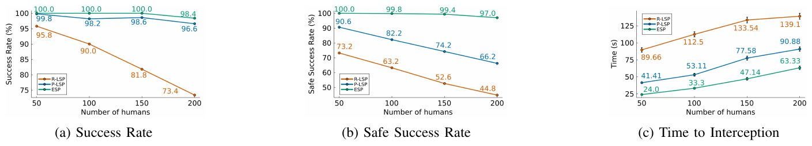
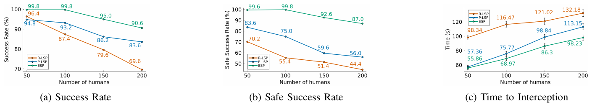
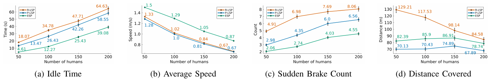
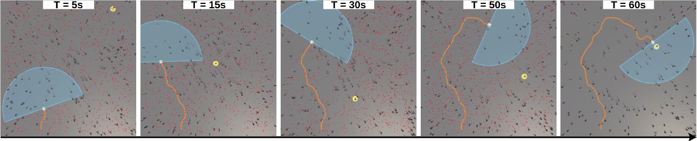

Abstract
Target interception in crowded environments requires reaching a moving objective while navigating among multiple uncertain human agents. Since human navigation intent is not directly observable, the robot must reason over multiple possible future interaction outcomes. We formulate interception in crowds as a partially observable Markov decision process and solve it online using tree search under a fixed computational budget. In this setting, the action-space structure directly shapes the search tree and how computational effort is allocated. We compare a sequential path–speed planner, which first plans a spatial path and then modulates speed along it, and a unified planner that jointly branches over steering and speed within tree search. Across simulations with up to 200 humans, both approaches perform similarly at low crowd density but diverge sharply as density increases. In dense settings, the sequential planner drops by over 30% in safe interception rate and requires around 40% more time to intercept than the unified steering–speed planner, revealing a structural limitation of spatial restriction.
Video overview
Planning formulations
Action-space structure in online tree search
P-LSP first predicts a future target position and uses Hybrid A* to construct a kinodynamically feasible path to that position. Online tree search then controls the robot's speed along the fixed path. ESP instead exposes both steering and speed decisions to tree search. The experiments examine how this difference in action-space structure affects interception performance as crowd density increases.
Predictive Limited Space Planning (P-LSP)
Hybrid A* plans to a predicted future target position. Tree search selects speed updates along the resulting path.
Extended Space Planning (ESP)
Tree search selects both steering and speed actions, allowing the spatial trajectory to change during planning.
Results
Interception performance across crowd densities
We evaluate each planner over 500 paired trials at every crowd size, from 50 to 200 humans. The planners use the same observations, belief representation, reward, and 0.5-second planning budget.
Primary study
The primary study assumes that the target state is fully observable, isolating the effect of action-space structure under increasing crowd density.
- Approximately 47% higher safe-success rate: 97% for ESP versus 66.2% for P-LSP.
- Approximately 30% shorter time to interception: 63.3 seconds for ESP versus 90.9 seconds for P-LSP.

Secondary study
The secondary study uses a particle filter to estimate target state from intermittent detections, and the planner acts on the most likely target-state estimate.
- Approximately 55% higher safe-success rate: 87% for ESP versus 56% for P-LSP.
- Approximately 13% shorter time to interception: 98.2 seconds for ESP versus 113.1 seconds for P-LSP.

Motion characteristics
In the estimator–planner study, ESP exhibits lower idle time, higher average speed, and fewer sudden-braking events than P-LSP. ESP also covers more distance while requiring less time to intercept the target.


Citation
BibTeX
@inproceedings{gupta2026beyond,
title={Beyond Fixed Goal Delivery: Online POMDP Planning for Target Interception in Crowds},
author={Gupta, Himanshu and Aladum, Kelvin and Ahmed, Nisar and Hayes, Bradley and Sunberg, Zachary},
booktitle={IEEE/RSJ International Conference on Intelligent Robots and Systems (IROS)},
year={2026}
}Paper